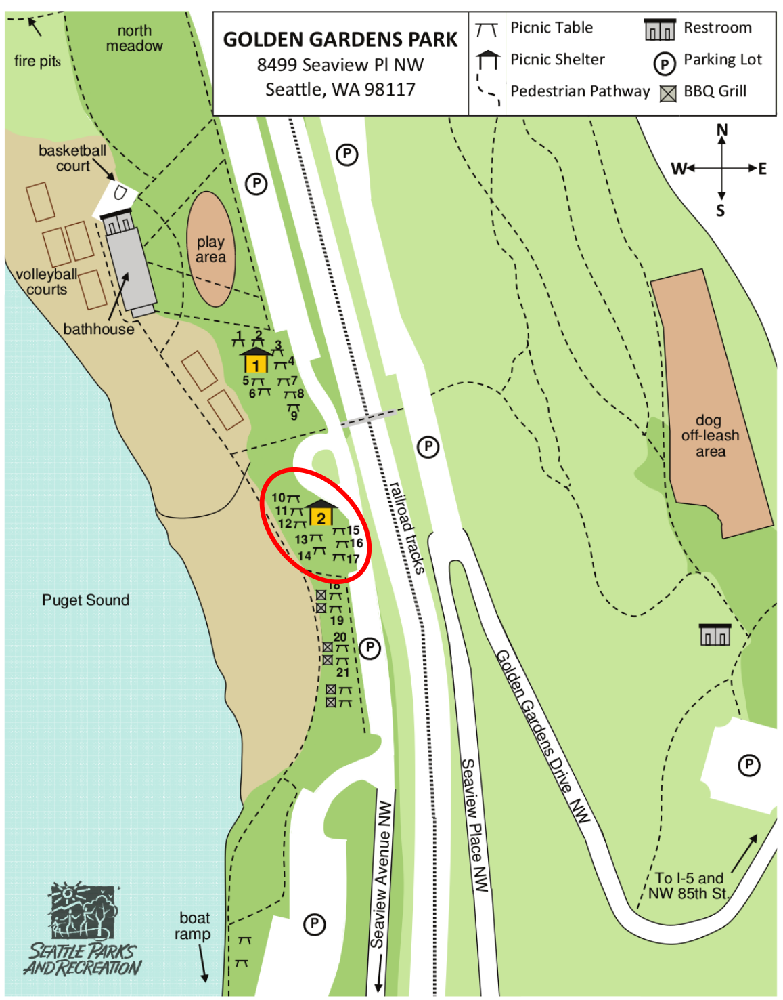
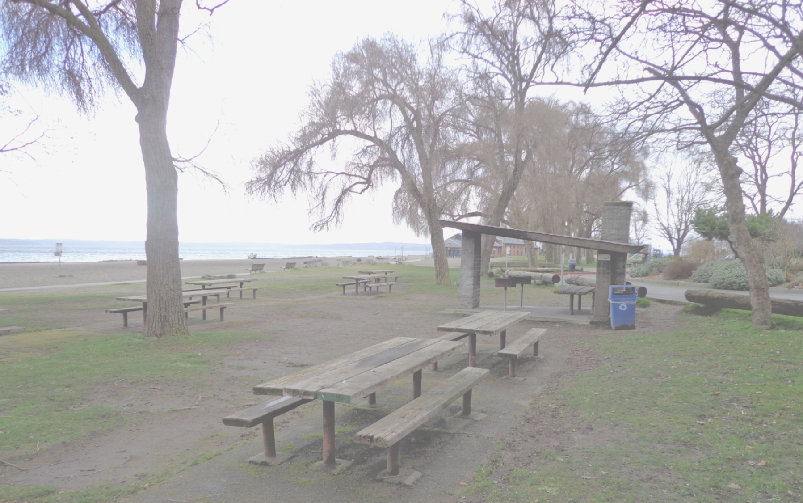

Welcome to our wedding website.
Below you will find details about our wedding. This website will continue to be updated over the coming weeks.
-Peter & Claire
Welcome BBQ
Everyone is invited to a casual welcome/rehearsal BBQ in Ballard at Picnic Shelter #2 in Golden Gardens Park from 5 to 8 PM on Friday, August 5. We have the site reserved from 3 to 10, however, so feel free to come early and stay late! Golden Gardens has a sandy beach on the sound, so bring beach activities and clothes. We will be grilling hamburgers and hotdogs. (Reminder: alcohol is not permitted in Seattle parks.) This map indicates the area we have reserved:
 Ceremony
Guests can arrive at 5 PM; the ceremony will begin at 5:30 PM on August 6 in Gas Works Park. The street address is 2101 N Northlake Way, Seattle, WA 98103. We will be on the east side of the park. There is a parking lot at Gas Works, but we recommend taking a taxi, Uber, Lyft, carpool, bicycle, or bus! The reception location is an easy 15 minute walk from the ceremony location along the waterfront of Lake Union. Our plan is for all guests to walk together from the ceremony site to the reception, and we hope you will join us!
Reception
The reception will be at the Lake Washington Rowing Club, at 910 N Northlake Way, Seattle, WA 98103. We plan to stay until 1 AM, and we hope you will, too!
Lodging
There are many hotels in downtown Seattle, which is less than 15 minutes away from the ceremony and reception locations by car. In addition, for a more affordable (and social!) option, there is a hostel a very short walk from the wedding locations. We hope many of you will stay there!
The Watertown Hotel is reasonably close to the wedding location, and you can use the offer code "WED" when you book through their website to save 15%.
Registry
Your presence at the wedding is more valuable to us than presents! However, if you would like to buy a gift we have registered at Amazon and Zola.